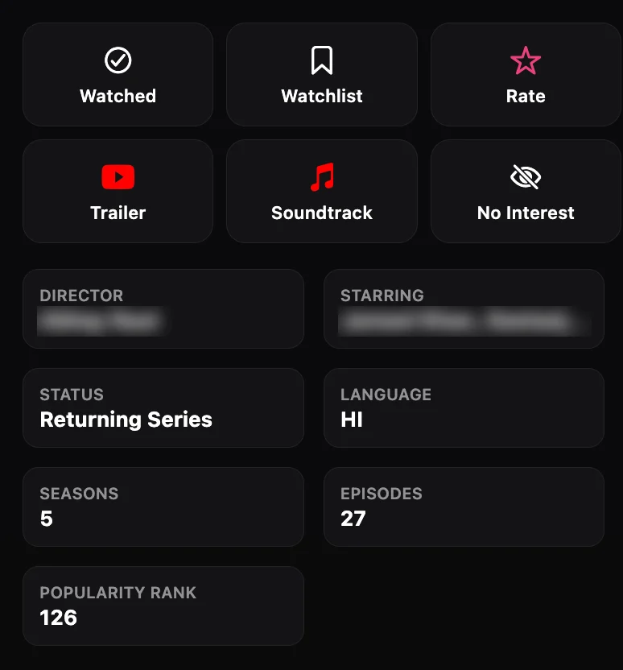

The title page, before and after
June 2026, captured

Six buttons with the same weight. Watching a trailer looked as important as logging the title. Names are blurred.
October 2026, drawn from the spec
The play button shows only when there is a streaming listing or a trailer.
A schematic, not a screenshot. I have no capture of this version yet.